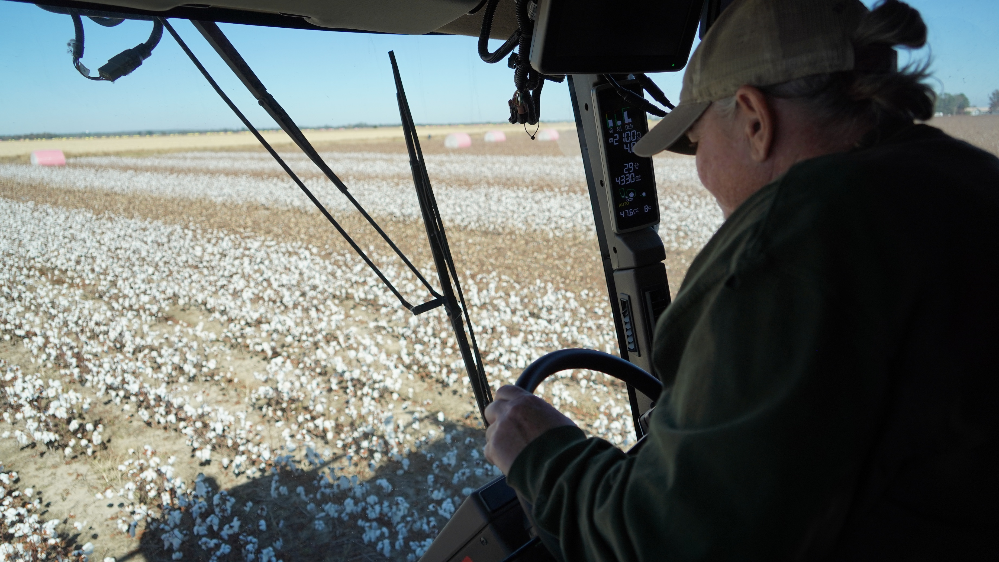

Agronomy
Agronomy
How to Conquer Weeds After the Rain
Wet conditions changed your plan — here’s how to recover residual control without burning the next pass.
Read More
Practical, field-ready insights built for the way you farm — timely recommendations, product strategies, and local expertise to help you protect yield and make confident decisions all season.
Agronomy
Wet conditions changed your plan — here’s how to recover residual control without burning the next pass.
Read More
Crop CareA practical primer on what each nutrient actually does — and when to put it where for the best return.
Read More Ag Technology
Ag Technology
Stabilizers and timing tools that keep more N in the root zone — the data behind the call.
Read More Markets & Trends
Markets & Trends
The provisions that affect your operation, and how to plan around the timeline still in motion.
Read More Company News
Company News
Row-crop growers from nine states gathered in Nashville for hands-on workshops and trial-plot tours.
Read More Agronomy
Agronomy
What the first week of scouting tells you about the season ahead, and where to focus your protection plan.
Read More